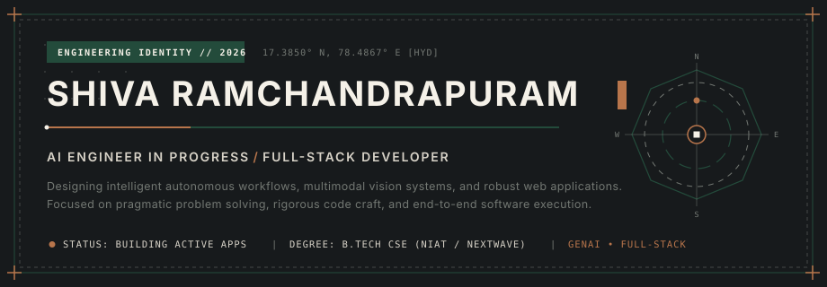
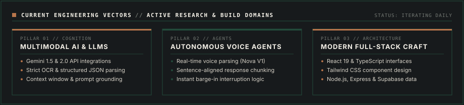
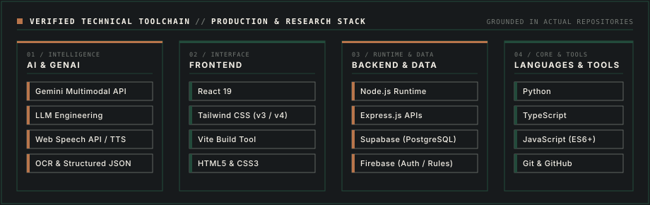
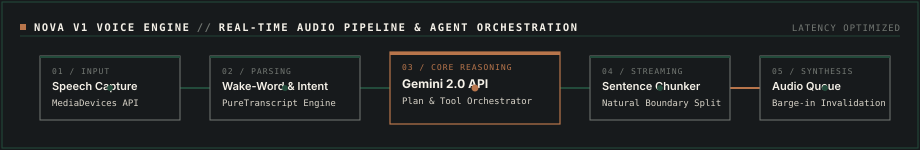
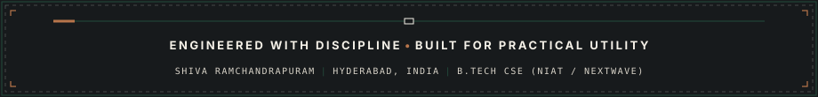

01 // PROFILE & ARCHITECTURAL APPROACH
"Engineering intelligent systems by pairing foundational generative AI capabilities with responsive, dependable web architectures."
I am an Aspiring AI Engineer and Full-Stack Developer currently pursuing my B.Tech in Computer Science and Engineering at NIAT / NextWave Institute of Advanced Technologies in Hyderabad, India.
My engineering methodology centers on pragmatic problem solving: translating cutting-edge model research into production-grade, intuitive software. Rather than treating AI as a black box or an isolated novelty, I build integrated systems where real-time speech processing, multimodal vision, and structured prompt pipelines interface directly with modern web clients and robust backends.
- Primary Discipline: Artificial Intelligence Engineering & Autonomous Agent Systems
- Academic Foundation: B.Tech Computer Science & Engineering (NIAT / NextWave)
- Core Working Philosophy: Learn by building, ground every solution in solid software fundamentals, and iterate with discipline.
02 // CURRENT RESEARCH & BUILD DOMAINS

- Multimodal AI & LLM Engineering: Implementing production pipelines using the Gemini API (
@google/genai). Designing structured prompt schemas, deterministic JSON outputs, strict OCR verification guards, and multimodal context ingestion. - Autonomous Agent Loops & Voice Systems: Developing voice-first intelligent agents with low-latency speech recognition, sentence-aligned audio chunking, intent routing, and real-time barge-in interruption handling (as featured in Nova V1).
- Modern Full-Stack Web Craft: Architecting scalable frontend applications with React 19, TypeScript, and Tailwind CSS, coupled with lightweight REST services in Node.js and persistent state in Supabase and Firebase.
03 // VERIFIED TECHNICAL TOOLCHAIN

| Vector | Supported Technologies | Applied Implementation Scope |
|---|---|---|
| AI & GenAI | Gemini Multimodal API LLM Engineering Web Speech API |
Context grounding, prompt schemas, strict OCR guards, and conversational audio synthesis. |
| Frontend Interfaces | React 19 TypeScript Tailwind CSS HTML5 CSS3 |
Modern component systems, typed state architectures, and responsive editorial styling. |
| Backend & Data | Node.js Express.js Supabase (PostgreSQL) Firebase |
REST API endpoints, user authentication, security rules, and relational data vaults. |
| Languages & Tools | Python JavaScript (ES6+) Git GitHub Vite Vercel |
Core scripting, speech automation, version control discipline, and edge continuous deployment. |
04 // FEATURED ENGINEERING PROJECTS
★ FLAGSHIP PROJECT | 01. V1 – AI Voice Assistant (Nova)Domain: Voice-First Conversational AI & Real-Time Agent Intelligence Nova is an intelligent, voice-first desktop artificial intelligence assistant engineered for low-latency conversational speech and autonomous task orchestration. The system integrates continuous speech recognition, deterministic wake-phrase detection, and generative language modeling with the Gemini API to parse user intents, execute multi-step workflows, and stream synthesized audio with real-time barge-in interruption handling.  Verified Tech Stack: Key Architecture: MediaDevices Speech Ingestion • PureTranscript Wake-Word Filter • AgentOrchestrator Intent Routing • Sentence-Aligned Response Chunker • Dynamic TTS Provider Factory • Instant Barge-In Interruption Invalidation |
02. MediLens AIDomain: AI-Powered Healthcare Assistance & Vision Intelligence An assistive medical document intelligence prototype built to analyze prescription images, medicine packaging, and clinical lab reports. Employs multimodal computer vision via the Gemini Vision API alongside a strict OCR guard to transcribe, validate, and structure medical text into clear summaries without hallucinating ambiguous medical data. Verified Tech Stack: |
03. CineStreamDomain: Media Discovery Application & Content Navigation A Netflix-inspired media discovery platform engineered for fast catalog exploration and trailer playback. Features an editorial dark-mode interface, responsive categorized movie exploration, dynamic search filtering, and seamless external media catalog integrations. Verified Tech Stack: |
05 // REPOSITORY METRICS & ACTIVITY
06 // NETWORK & COLLABORATION
I am always keen to collaborate on generative AI experiments, autonomous agent architectures, and full-stack software products. Feel free to connect across my verified channels:
